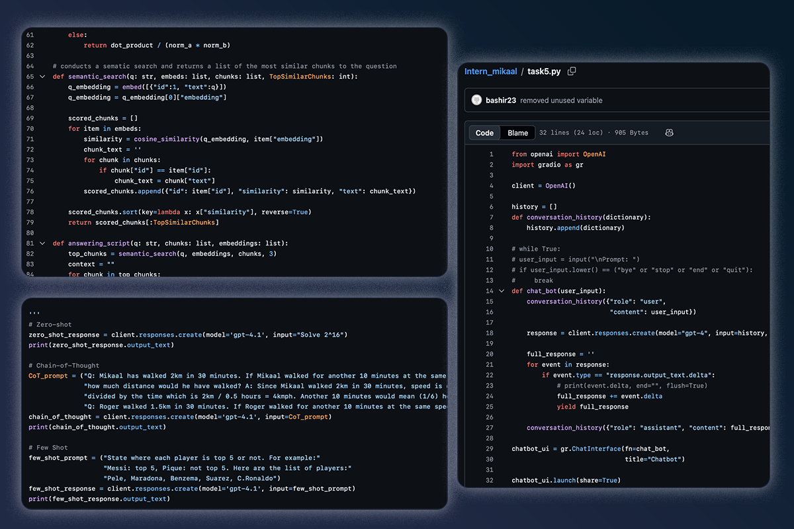
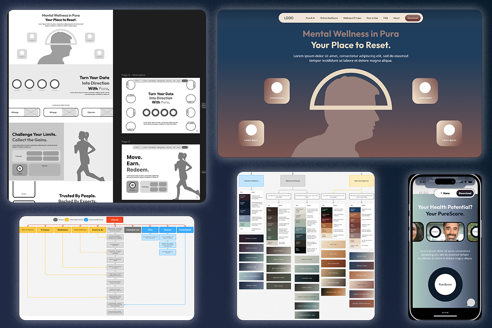
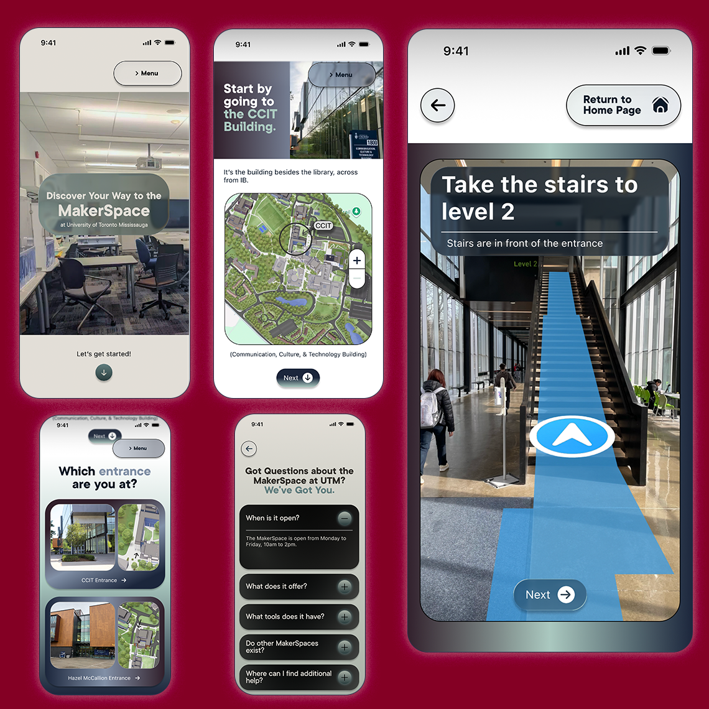
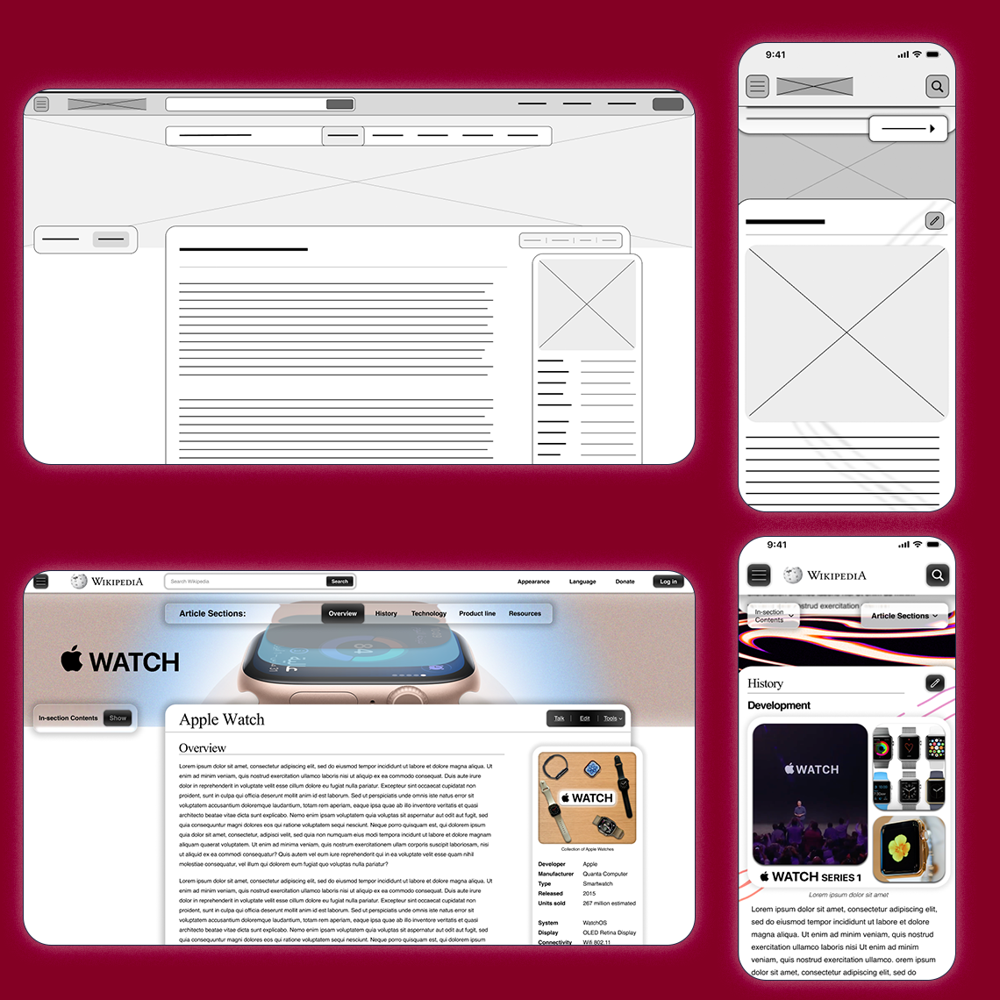
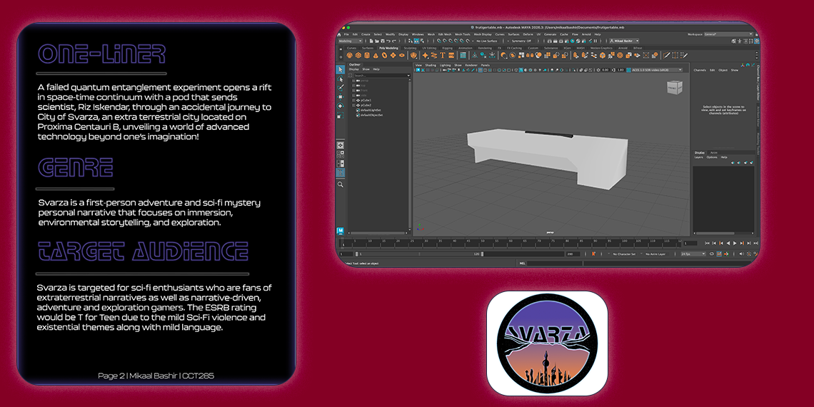
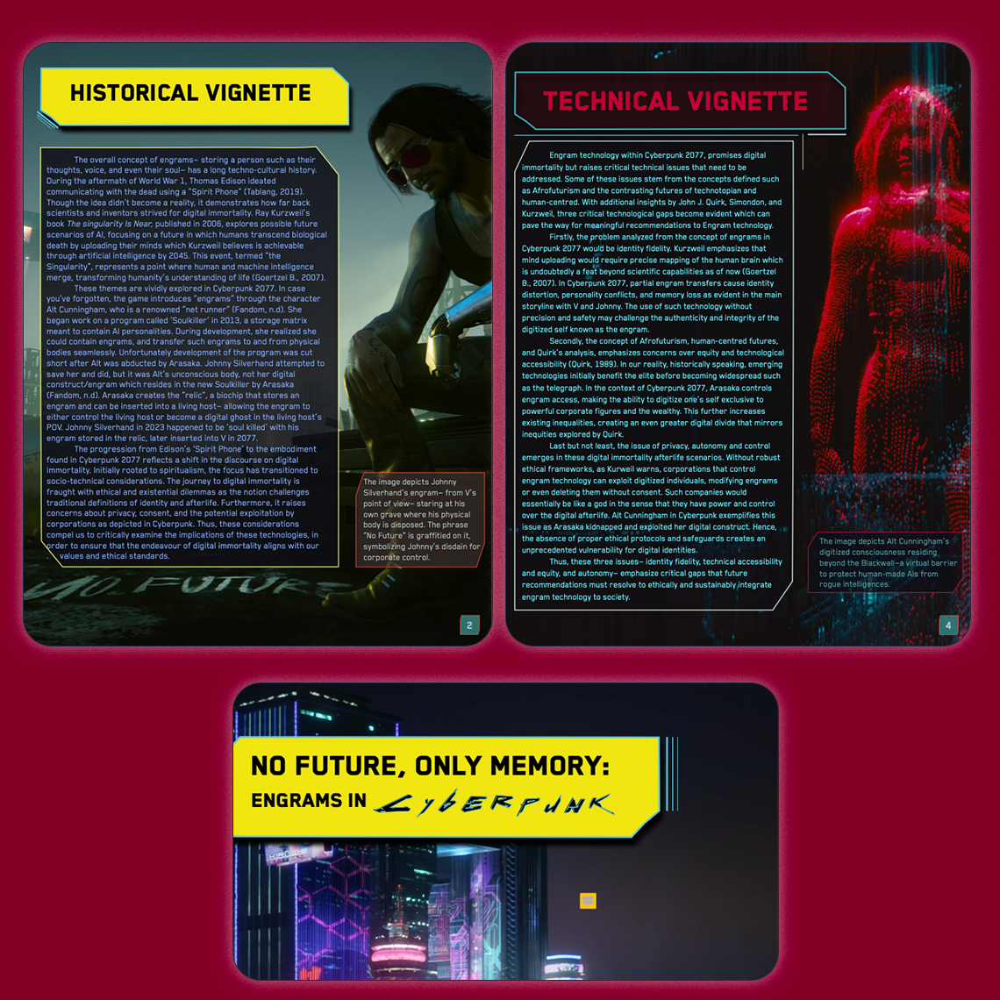
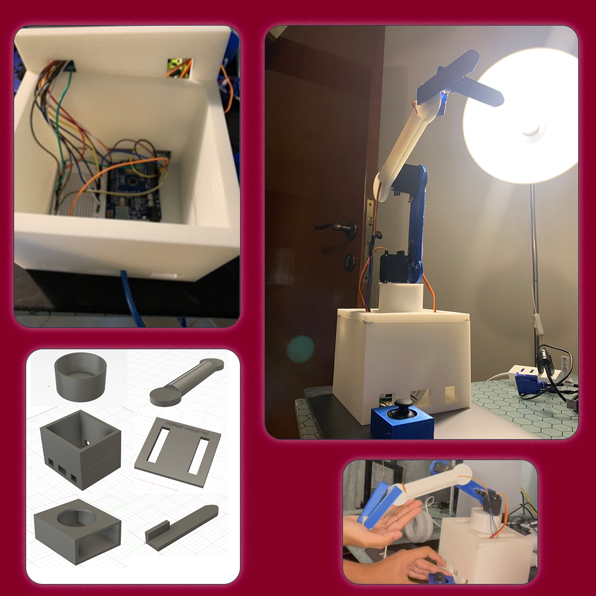

My Portfolio
My Internship Experiences

Generative AI Intern at Avanza Innovations
Learnt how to use OpenAI's responses API using python. Learnt how to build a RAG pipeline which included chunking a text file, embedding it, running semantic search with the prompt's embedding and the embeddings of the text file, using matching embeddings as context for the LLM to respond. Built a chat bot with streamed responses and used Gradio for the interface. Used Hugging Face and Google Colab to train AI models.

UI/UX Intern at Pure Heath, PureCS
Studied the NHS Accessibility Checklist, learnt about design systems, created a sitemap of an improved version of the Pura app website. Then, I started to create wireframes for both desktop and mobile view. During this process, I learnt a lot of key skills such as gridding and spacing systems, interactive prototyping, and colour theory. The output was an interactive website prototype with three variations depending on the colour direction.
Notable School Projects

Hi-fi interactive prototype of a website I was tasked to create as part of a group project to help students find the Makerspace in the University. I used Figma and Photoshop.

Tasked to redesign the information architecture and UI of a Wikipedia page. I revised the IA then created wireframes, photoshopped images, medium-fi prototype for desktop and mobile.
During highschool, had various video editing projects. Using FCPX, I created the top video which explains the wire types, and the bottom video part of a campagin to raise awareness.

As part of a worldbuilding project, I created a game using Unity, C#, Photoshop, and Maya. The process started with a design pitch, then the 3D models, and finally, the game on Unity.

Created a zine about the world of Cyberpunk using Photoshop, Apple pages, as well as a series of readings related to the course: Digital Innovation and Cultural Transformation.

A highschool project involving the creation of a mechanical robotic arm. The tools used to create this arm were Fusion 360, 3D printer, Arduino, servos, joy-stick, Dupont wires, breadboard.